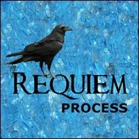
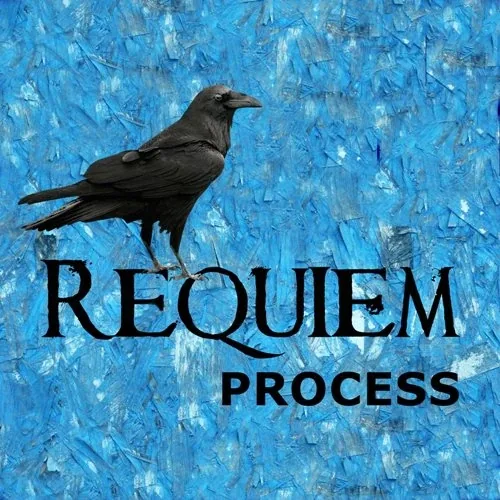

REQUIEM
PROCESS
REQUIEM
PROCESS

- The Requiem - An Archan Ceremony - THE PURPOSE OF REQUIEM- The purpose of Requiem is to more consciously complete life changes – child adoption, divorce, death, becoming adult, career shift, moving away, war, natural disaster, and so on. So many important changes go undigested because we lack an authentic ritual. - The term Requiem comes from the Latin, requies, meaning “to rest.” Requiem is a safe space for people to come together and say the rest, feel the rest, express the rest, understand the rest, and finally come to rest in the new conditions. - For example, we have no completion ritual for ending long-term relationship. When I got divorced I did what I had to do to split up, but the process lacked elegance, dignity, and also completion. Even after years some people are still offended, still holding unfinished communications in their hearts, because children, parents, friends and relatives never all came together in a way that such an important transition deserves. We had no Requiem. - Most of us would admit to having painfully-unfinished messes in our lives. Our surface mask hides undigested heartache that if brought to Requiem would have a chance to heal. Even joyous reactions may fester if unexpressed. In Requiem, our rage, joy, sadness and fear can be shared, our opinions heard, and profound communications completed. - Sure, there are reasons for not coming together. These days our friends and family may be spread all over the world. Plane tickets cost money. Vacation time may be scarce. And expressing feelings is not easy. - But if someone dies, many people would come to pay their respects at a funeral. Modern culture's traditions are questionable... you only talk to someone after they are dead? - A Requiem serves the purpose of paying respects – to each other, to ourselves, and to a more loving and connected future together. Requiem helps us enter new circumstances with dignity. Here are a few guidelines for Requiem: - When you or someone you know experiences a change that touches people and needs to be digested, set a date and send out an invitation to Requiem. - Find a Requiem Host – a person who is trained to hold space for the process. Reserve a room for one to three days and nights, depending on how many people will attend, and the severity of the change. The room should be carpeted and supplied with chairs, plenty of cushions and blankets, fresh drinking water, and healthy snack foods. - The Requiem host is the first person to arrive and the last person to leave. He or she stays in the room all day (and all night, if needed) from start to finish, and has the ability to host meaningful conversations. As soon as two or more people are gathered the Requiem host says, “Let the Requiem begin.” - Requiem is a community of people gathered together in the name of Love. There are two rules to which participants must agree: 1) No alcohol or drugs. 2) Don’t hurt (or threaten to hurt) yourself or anybody else. Then anything goes. People sit, stand, move, discuss, shout, blame, hate, scream, cry, defend, argue, mourn, dance, eat, sleep, ask daring questions, tell stories, sing, and keep going and going, everyone, all at once, until all is said and done. - Whoever comes are the right people. Whenever they arrive is the right time. When people are hungry they bring out their food and share it. When people are tired they sleep. And, when it is over, it is over. This may seem like absolute chaos according to ordinary standards, but if the Requiem process is trusted it runs according to its own magnificent order. - As the past is emptied, as the present fully arrives, when people are ready to create a new future together and the last people are about to leave, the Requiem host says, “This Requiem is ended.” Then he or she closes the space. - Your courage to go first makes you a leader of cultural change. - (NOTE: Requiem is a facilitated process, meaning that it is started, navigated, and completed by a Requiem Host, specially trained to hold space in total chaos for as long as it takes, and then to bring the participants back to order in a new formation. If you are attracted to such a calling you already have the prerequisites. Requiem Host training provides you with skills and distinctions not available in ordinary modern culture but required for navigating the strong - feelingsand- emotionsthat may arise during Requiem so as to assure the safety and completeness of vulnerable communications.)- REQUIEM AND CONSCIOUS DEATH IN THE WESTERN BAUL TRADITION- (This is an excerpt from the book - No Reason: 21 years with Western Baul Master Lee Lozowick- Clinton Callahan, available from- Thoughtware Press.)- Even though we are Western Bauls we are perhaps more brainwashed by the American attitudes about death than we might want to believe. The American attitude towards death is that it won’t happen to me. Death is a mistake from God. Science is quickly repairing God’s oversight. If natural healers can’t cure me then in the last minute allopathic medicine will step in and save my ass with its heavy hammer of technology and drugs. If I do happen to accidentally die then something went wrong. It was a mistake. I am an American. Death is not part of our culture. I must struggle against death to my last breath. - Occluding death’s certainty is a modern cultural trait, developing along with the industrial revolution of the 1850’s. Observe old village churches in Europe and it is revealed that death was historically an integral part of spiritual considerations. The pious (or the privileged) were actually buried on church grounds, as close to the church as possible, and the church itself was in the center of the village. Every time you attended a service you were also walking through the graveyard, a daily reminder of your ultimate physical demise. A popular gravestone carving of the early 1800’s reads: - Remember me as you pass by.- As you are now so once was I.- As I am now so you will be.- Prepare yourself to follow me.- We would not likely see such an epitaph today. In fact, we hardly see gravestones at all. Today’s cemeteries are hidden miles out of town, well away from view. Cheaper and easier is to burn the corpse and toss away the ashes so there is no trace of the death at all. The modern result of death is not seeing Instagram postings from someone for a very long time... - With SUVs, cell phones, credit cards, nightlife, computer games, plasma flat screens, the blogosphere, streaming videos, and a gazillion channels of shit on the TV to choose from, the primary function of modern Western culture may be to distract us from the inescapability of our own death. For example, even the dire and declining physical condition of my parents does not bring them to separate from a lifetime’s collection of consumer goods. Instead they talk of their next vacation to Europe. - It is not easy for our subculture of Western Bauls to retain its simple purity when continuously blasted by the Technicolor pretensions of whoever is imitating the great American archetype Mickey Mouse (who, by the way, never dies). To stand in Western Baul cultural knowledge about death we may repeat Little Big Man’s mantra, “It is a good day to die.” We may recount how Don Juan implored Carlos to remember Death waiting incessantly over his left shoulder. We may subscribe to the Sufi teaching to “die before you die.” We may have read E. J. Gold’s - American Book Of The Dead- The predominant community head about serious diseases and the process of dieing seems to be to withhold the existence of or the details about a person’s condition from public knowledge to the point of total concealment. This is done for a good reason. The Chinese Law Of Secrecy is known to us. When an outcome is still uncertain, that outcome can be easily swayed by the subtle energetic contamination of unconscious projections, fears, and personal desires of people having even the best of intentions. Better to keep the delicate situation secret so Divine influence can do its work and a beneficial outcome occurs. - But what if the outcome is no longer in question? What if we give up the American fantasy-world of immortality and admit that Death is on a serious mission? At some point for all practical purposes the game is up. We know we are going to die. What is the point of continuing to maintain all the secrecy? Perhaps there is a misunderstanding. Perhaps our present attitudes and actions surrounding an approaching death represent early experimental attempts at expressing our way of dealing with impermanence. Perhaps we are ready for the next level. - And that brings us to the central question: what is to be the way of Western Baul dieing? Does conscious death mean to spend our last few days desperately holding on to the chance that the laws of nature will somehow be radically reversed in our particular case? Perhaps this is not what was originally intended by the secrecy. Perhaps our present tradition of dieing secretly is a temporary aberration that actually contradicts the very fact that we are a community. - As a community we are one body. When one part of the body is ill and the other part does not know, this lack of communication causes a disharmony that could well even aggravate the illness. By keeping an illness secret it is true that the victim is protected from burdensome sentimentality, nostalgic emotionalism, projected fears, and so on. On the other hand, keeping the dieing process secret potentially cuts off the body from useful learning and potentially cuts off the sick person from healing resources that may be abundant in other parts of the body. - Sickness and death are evolution in action, a learning process for the whole of the community, no different from healing and birth. We already recognize and embrace the fact that one person’s insight can inform and benefit the whole of our community. That is why we have Tawagoto, Hohm Press, Celebrations and Bordellos. Could it be just as true that one person’s pain and suffering also benefit and inform the body of the whole community? - Let us try a new experiment. Let us henceforward make it an option that when a student of the Western Baul tradition realizes that they are in the final stages of their death they can ask for a Requiem. Let it become possible that a dieing student can ask for a time of being with other members of the community, a day or more of coming together, of completion, of sharing and letting go. Let Requiem be a time for celebrating with gratitude the greatness and mystery of life through acknowledging that there is nothing we can do to prevent it from ending. - We could include in Western Baul tradition that when a person comes to the point of recognizing that they are about to die they can go public. They can call an assembly of friends, a Requiem. Instead of keeping death private we could have the tradition of going out with a party. And in doing so we would not be in poor company. Paramahansa Yogananda for example, died on stage in front of hundreds of friends and devotees. - We are spiritual students, yes. And we are also human beings. I think that Lee has been telling us over and over that being a warrior of the path does not obviate our own simple humanity. Although we do not have so many powers as a human being one power that we do have is the power to greet each other with a “hello” and the power to part from each other with a “good bye.” To leave without saying “good bye” is a sneaky way of saying, “I am not really dieing.” The gesture leaves inelegant incompletions and disrespects of the depth of our connection and the interdependence of our lives together in this community. We are of one body. We are, if nothing else, friends. Friends usually do not leave for a great transition in their life without saying “good bye.” Let us create the possibility of consciously saying “goodbye” to each other before we die. - The choice to have a Requiem is not something that can be decided by someone else. Lee has said that we as a group cannot pronounce for someone else what they have not yet pronounced for themselves. It would be inappropriate to tell a person that it is Requiem time because they are soon dead when they are not yet owning that their condition is just this. Great sensitivity and respect are in order. - To prepare yourself for the new experiment all you have to do is memorize the following words: “I’m dieing. I want a Requiem.” Leave the rest up to us. We are Western Bauls and we know what to do. - But here’s the catch. God works in mysterious ways. What if you’re wrong? What if you have a Requiem and then afterwards you don’t die? Wouldn’t that be the ultimate embarrassment? The little boy who cried, “Wolf!” Wouldn’t you be the laughing stock of the community? Everybody coming around to make their final farewells, and then you don’t have the good manners to die! - I suppose that would be the occasion for starting another new ritual in the Western Baul tradition. We would then invite everyone back together again for another party. This time we would call it a Resurrection. - USING REQUIEM AS A GRIEVING PROCESS IN A GROUP- REQUIEM – GRIEVING INITIATION - World Copyleft 20224 by Clinton Callahan for use by registered Possibility Trainers only. (Rev: 11 October 2024 by Clinton Callahan) - (NOTE: Possibility Management is open code thoughtware. The copyleft notice affirms that this material cannot be copyrighted. The use limit is to assure that if an unqualified person tries to deliver this initiation and runs into problems, they alone are responsible. This is a powerful initiatory process that tends to catalyze expansion in personal consciousness and causes 5 Body Liquid States. It needs to be delivered within a specifically held context and space by a person with a specific skill level, quality of consciousness, and intention.) - FORMAT: - Whole group process. - Duration: 60-90 minutes - PURPOSE: - To grieve and thus digest and integrate change. - SETUP: - People stand or sit in chairs in a close circle with the back facing inward. - Buckets and tissues are spread around the circle. - INTRO / BACKGROUND: - This is a process where we use the New Thoughtmap of Feelings. During the Requiem Process the feelings are clearly separated and felt. - We all have something to grieve, e. g. you can grieve: - • The loss of vitality and perfect state. Like when you get older and your body starts hurting here and there. - • A change of conditions, habits, projections, story worlds. - • Leaving behind people, security, your village as you evolve awareness. - • Etc. - Leaving something is always connected to deep grief. In modern culture we don’t grieve deeply or often enough. - INSTRUCTIONS / PROCEDURE: - This is going to be a journey into the territory of archetypal sadness. Try to grieve in deep sadness, deeper than you have ever done. - Please come together standing in a circle with your back turned towards the middle. If you are here with your partner, please don’t stand next to him/her. Choose somebody else. - Alternatively we can sit in chairs in a circle, backs towards the center of the circle, still linking arms. - We will stand really close and link arms with the two people standing next to us. During the process you might also want to grab the hands. Just make sure you stay in close contact. - There might be times to use the buckets or tissues. When you pick these, still stay in contact with your partners. - You will start with the first thing you want to grieve about. Whatever comes up, just speak out loud what you grieve. During the process you can only grieve one thing or also several things. You might not get all the way through. That’s fine. - There is one rule: - Please don’t hurt yourself, don’t hurt anybody else and don’t slime the floor. Do you agree? (YES) Does anybody not agree? - Some of you might tend to crawl on the floor. Don’t do this. Just keep standing next to your people. - Please take a deep breath. Close your eyes. And now pick something you want to grieve about. It’s already there. We all have something to grieve about. Enter the territory of archetypal sadness. GO! - This will take 20 to 30 minutes. Keep making and vanishing black holes. - Then the trainer brings the grieving session to an end. In addition you can invite people to the following experiment: - For the next couple of minutes I would like you to grieve about the Earth, the pain of the Earth, what humans are doing to the Earth. GO! - Go for another 2 to 3 minutes and then bring the grieving to a complete stop. - While still standing in the circle with the back facing inward, say something like: - This was the territory of archetypal sadness. It is yours and you can always go there again. Everybody has it. It is actually the same for everybody. We are all connected through this. In sadness we are one. - Take a deep breath. And now turn around so that we all face inward into the circle. Get close again (as trainer start holding your partners arm in arm. The other participants will automatically do the same). - People grieve too little. Really, it is necessary to let go of things and people so that the new can come. You have to leave things behind and therefore grieving is important. - If anybody would like to say anything right now, go ahead. The trainer can now go first by saying something like I feel glad that I could grieve together with you guys…. - After all comments the trainer ends the process. Take another deep breath. I suggest that you now go around and hug different people and then go to sleep. - # A Requiem Process- Recording from the online Requiem Process for Ingrid Schmithüsen 10 November 2024 - NOTE: This website is a - Bubble in the Bubble Mapof the massively-multiplayer online-and-offline thoughtware-upgrade personal-transformation game called- StartOver.xyz. It is a- doorwayto- experimentsthat- upgrade your thoughtwareso you can- createmore- possibility. Your knowledge is what you think- about. Your- thoughtwareis what you use to think- with. When you- change your thoughtware, you go through a- liquid stateas your mind- reorganizesitself. Liquid states can bring up transformational- feelingsand- emotions. By- upgrading your thoughtwareyou- build matrixto hold more- consciousness (archived — not captured). No one can do this for you. No one can stop you from doing it. Our theory is that when we- collectively buildone million more Matrix Points we will change the morphogenetic field of the human race for the better. Please choose- responsiblyto read this website. Reading this whole website is worth 1 Matrix Point. Doing any of the experiments earns you additional Matrix Points. Please use Matrix Code REQUIEMP.00 to log your Matrix Points earned at this website on- StartOver.xyz. Thank you for playing full out!